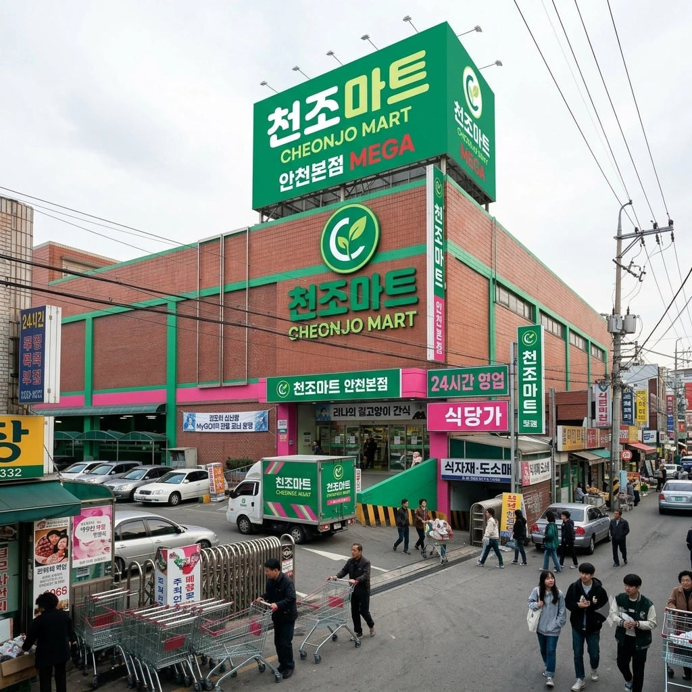
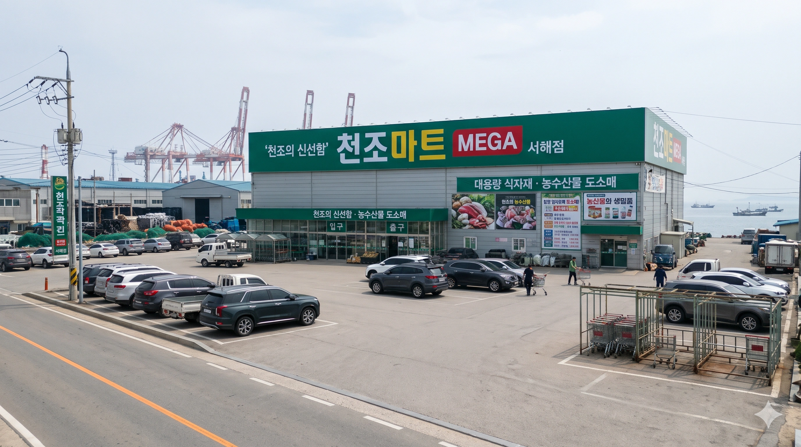
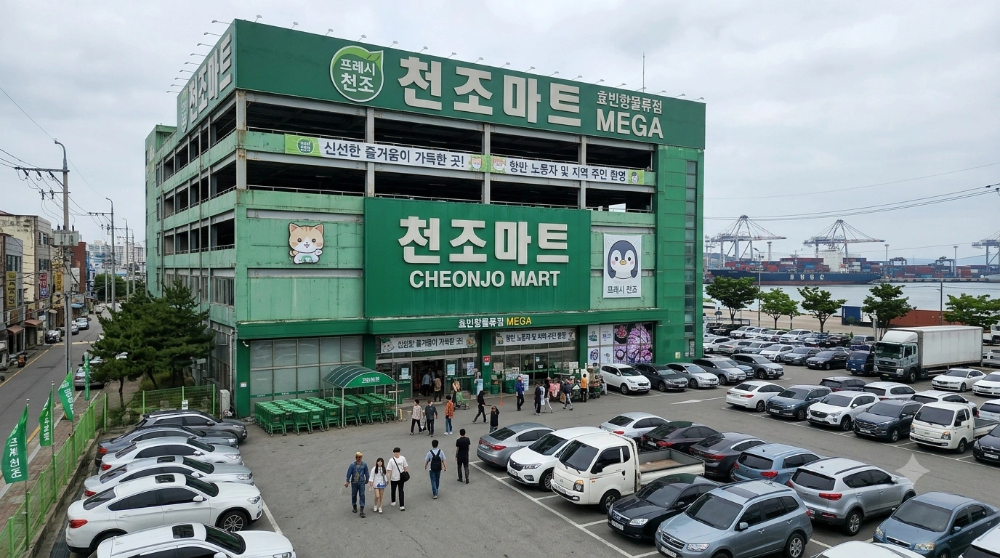

덕빈북도 빈주시 가원구 천조읍에서 시작된 로컬 유통업체. 비교적 최근에 자본을 끌어모아 세를 불려나가기 시작한 신흥 강자다. 매장 수가 빈스마트나 마루마트, CY마트처럼 수십 개에 달할 정도로 많지는 않지만, 공격적인 입지 선정과 폐점한 타 대형 유통사의 알짜 건물을 매입하는 전략을 통해 소수 정예 알짜배기 운영을 자랑한다.
원래 천조유통(주) 창업주 천조현 대표이사와 임원진은 효빈시 특유의 미쳐 돌아가는(?) 서브컬처 밈 마케팅을 어떻게든 피해보고자 가장 투박하고 정직한 지역명('천조')과 친환경을 상징하는 무난한 색상('프레시 그린')을 골라 마트를 런칭했다. 그러나 이는 그들의 가장 뼈아픈 오판이자 효빈시의 무서움을 간과한 패착이었다. 효빈권에서 오타쿠의 눈을 피할 수 있는 유통업체는 존재하지 않는다.
천조마트의 이름인 '천조'의 한자는 다름 아닌 千早다. 이를 발견한 효빈시의 방도리(BanG Dream!) 팬덤은 즉각 "이곳은 치하야 아논(千早 愛音)의 공식 영지다!"라며 강제 성지화를 선언했다. 마트 전단지에 정직하게 적혀 있던 "천조의 신선함"이라는 문구는 졸지에 "아논의 풋풋함"으로 번역되어 오타쿠 커뮤니티에서 밈으로 굴러다니기 시작했다. 대표이사는 억울해 미칠 노릇이었지만, 밀려드는 손님들 때문에 간판을 내릴 수도 없는 노릇이었다.
여기에 확인 사살이자 결정타를 가한 것은 바로 마트의 테마 컬러였다. 천조마트가 '신선한 야채'를 어필하겠다며 채택한 상쾌한 녹색(프레시 그린, #059669)이 하필이면 치하야 아논과 같은 밴드(MyGO!!!!!) 소속인 길고양이 기타리스트 카나메 라나의 퍼스널 컬러(말차색)와 육안으로 구분할 수 없을 정도로 기가 막히게 맞아떨어진 것이다. 아논의 이름(천조)을 당당히 걸고 라나의 색깔(말차색)을 매장 전체에 칠해놓은 이 마트는, 덕후들 사이에서 '아논-라나 연합 마트', 즉 완벽한 MyGO!!!!! 공식 유통사(?)로 점찍히며 돌아올 수 없는 강을 건너고 말았다.
초창기 천조마트 점장들은 마트 기저귀 코너나 신선식품 코너에서 "아논 쨩 마지 텐시!"를 외치며 굿즈를 들고 인증샷을 찍는 씹덕들을 보며 기겁을 하고 쫓아내려 했다. 하지만 이들이 '말차' 맛이 조금이라도 들어간 과자와 음료수, 녹차 아이스크림, 파르페 재료를 카트가 터지도록 박스째로 쓸어가며 엄청난 객단가(매출)를 꽂아주자, 점장들의 눈빛이 달라지기 시작했다. 결국 그들은 자본주의의 달콤함에 완전히 굴복하고 말았다.
현재 천조마트 대형 매장들에는 아예 대놓고 말차 관련 식품만 산더미처럼 모아놓은 거대 라나 코너가 정식으로 운영 중이며, 매장 입구 고객센터에서는 5만 원 이상 구매 고객에게 아논의 펭귄 무늬 반창고를 사은품으로 덤으로 끼워주는 등, 그들도 결국 효빈시의 어둠(?)에 완벽하게 동화되어 훌륭한 테마파크로 진화했다. 매장 BGM으로 클래식 대신 MyGO!!!!!의 '미아(迷星叫)'나 '길잡이(栞)'가 하루 종일 흘러나오는 것은 이제 당연한 일상이 되었다.
천조마트의 태생지인 천조읍에는 이미 거대 유통 공룡인 이마트 빈주가원점이 떡하니 버티고 있다. 보통의 덩치 작은 향토 마트라면 이마트의 위세에 눌려 3년을 채우지 못하고 폐업을 면치 못했겠지만, 천조마트는 기가 막힌 입지 차이와 틈새시장을 이용해 끈질기게 살아남았다.
이마트 빈주가원점은 주소상 천조읍(애산리)이긴 하지만, 사실상 천조신도시의 외곽부에 치우쳐 있다. 애산역, 증림역 등 광역철도 인프라와 강력하게 연계되어 있어 오히려 타 지역(상만동, 천남동) 주민들의 접근성이 훨씬 좋고, 자차를 이용해 주말 원정 쇼핑을 오는 외부 인구를 대량으로 쓸어 담는 광역 거점 역할을 수행한다.
반면, 천조마트의 근원지인 '천조본점'은 천조읍의 진짜 찐 원도심(구시가지) 한복판에 얄밉게 박혀 있다. 신도시 아파트 단지 주민들이 간장 하나 사러 굳이 차를 끌고 이마트까지 나가지 않고도, 쓰레기를 버리러 나왔다가 슬리퍼를 질질 끌고 들어가 신선식품과 '말차 과자'를 털어갈 수 있는 '진짜 동네 마트(슬세권)' 포지션을 선점한 것이다. 이 때문에 이마트와 피 터지는 출혈 경쟁을 하기보다는, 서로 타겟 상권이 묘하게 분리되어 평화롭게 공존하며 각자의 파이를 파먹고 있다.
천조마트의 가장 골 때리는(?) 특징은 바로 "본점의 아이러니"다. 이름의 근원지이자 법인 설립의 시작점인 빈주시 '천조본점'은 사실 직접 가보면 크기가 조금 큰 식자재 마트(SSM) 규모에 불과하다. 동네 마트치곤 제법 크지만, 대형마트라 부르며 타 지역 사람들에게 자랑하기엔 몹시 민망한 사이즈다.
그런데 천조마트 법인이 최근 엄청난 흑자를 바탕으로 공격적인 자본 확장을 하면서, 본진을 넘어 효빈광역시에 진출해 어마어마한 짓을 저지른다. 바로 영업 종료로 간판이 떨어져 나가고 폐건물이 되어가던 옛 롯데마트 안천점의 거대한 하이퍼마켓 건물을 통째로 매입해 버린 것이다. 천조마트는 이 거대한 5층짜리 건물을 싹 뜯어고쳐 '천조마트 안천본점'이라는 간판을 당당하게 달아버렸다. 결과적으로 오리지널 본점(천조읍)은 식자재 마트 쪼가리인데, 타 지역 진출 분점(안천구)은 진짜 대형마트(MEGA)급인 기형적인 하극상 구조가 완성되고 말았다.
천조마트의 진짜 자본력과 무서움을 보여주는 거대 점포들. 총 3곳이 운영 중이다.
| 지역 | 점포명 | 상태/이력 | 특징 및 비고 |
|---|---|---|---|
| 효빈 안천구 | 천조마트 안천본점 MEGA | 구 롯데마트 안천점 매입 |
 천조마트의 실질적인 기함(플래그십)이자 상징적인 최대 규모 매장.매출 부진으로 폐점한 후 5년간 흉물스러운 방치 건물로 썩어가던 롯데마트 안천점을 2022년에 전격 인수해 부활시키는 기적을 보여줬다. 오리지널 천조본점보다 무려 4배는 더 크다. 안천구 주민들의 주말 쇼핑과 방도리 팬덤의 순례를 동시에 전담하고 있다. |
| 효빈 남구 | 효빈항 물류점 MEGA | 신규 출점 |
 지리적 단절 때문에 마땅한 대형 유통 3사(이마트/홈플/롯데)가 입점을 기피하여 심각한 쇼핑 사각지대였던 항동 한복판에 미친 척하고 때려 박은 대형마트. 거친 항만 노동자들의 식요품 수요와 항동(1~4동 테트리스 구역) 고립 주민들의 지갑을 완벽하게 독식하며 엄청난 흑자를 내고 있다. |
| 덕북 서해시 | 서해점 MEGA | 신규 출점 |
 덕빈북도 내 유일한 천조마트 대형마트(MEGA) 점포.전형적인 항구 도시인 서해시의 폐쇄적 상권 특성을 노려, 효빈항 물류점에서의 성공 노하우를 바탕으로 서해항 배후 단지에 야심 차게 진출했다. 새벽 조업을 나가는 어민들을 위한 수산물과 대용량 선박용 보급 식자재 유통에 극도로 특화되어 있다. |
천조마트의 뿌리이자 그룹의 내실을 든든하게 다지는 알짜배기 캐시카우 매장들. 공단과 읍내 상권을 위주로 조금씩 점포 수를 늘려가고 있다.
| 행정구역 | 점포명 | 특징 및 비고 |
|---|---|---|
| 덕북 빈주시 | 빈주 천조본점 SSM | 천조마트의 영혼의 고향이자 오리지널 본점. 규모는 다소 널찍한 식자재 마트 수준이지만, 천조읍 찐 중심부의 알짜배기 슬세권(슬리퍼 역세권)을 장악하여 이마트 빈주가원점의 견제에도 불구하고 흔들림 없는 막강한 일매출을 매일 갱신 중이다. |
| 덕북 빈주시 | 가원 상만점 SSM | 상만동 대단지 아파트 상가 지하에 입점하여 맞벌이 주부들의 퇴근길 저녁거리 장보기를 완벽하게 책임지는 생활 밀착형 매장. |
| 덕북 천주시 | 천주점 SSM | 천주시 외곽 국도변에 위치하여 지역 식당 사장님들의 대용량 식자재(식용유 말통 등) 보급을 책임지는 든든한 도매형 매장. |
| 덕북 계성시 | 계성점 SSM | 계성시 구도심의 낙후된 상권에 자리 잡아, 대형마트까지 갈 여력이 없는 노인 가구와 1인 가구의 든든한 냉장고 역할을 하는 알짜배기 매장. |
| 덕북 치원군 | 치원점 SSM | 치원군 읍내의 유일한 대형 슈퍼마켓. 농번기만 되면 새참용 빵과 대용량 막걸리를 사러 온 어르신들의 흙 묻은 경운기와 트랙터로 주차장이 완전히 마비되는 진풍경을 연출한다. |
| 효빈 북구 | 평전 산업단지점 SSM | 북구 평전동 산업단지 한복판에 공장 창고를 개조해 만들었다. 고된 철야 노동을 마친 공단 노동자들과 외로움을 달래는 외국인 근로자들에게 압도적인 인기를 끌며 삼겹살과 소주의 거대한 소비처로 기능하고 있다. |
천조마트는 대형 3사(이마트의 노브랜드, 홈플러스의 시그니처 등)의 PB 상품들에 대항하기 위해 지역 색채와 '의도치 않은' 서브컬처 밈을 극대화한 독자적이고 괴랄한 라인업을 적극적으로 구성하고 있다. 특히 대표이사의 무남독녀 외동딸인 천애음이 유학파 출신 마케팅 디렉터(자칭) 자격으로 상품 기획에 참여한 이후로는, 마트의 정체성이 안드로메다로 날아가며 기하급수적인 화제성을 낳고 있다.
천조마트의 가장 근본이 되는 기초 식자재 및 신선식품 PB 라인. "천조의 이름으로 신선함을 굳건히 지킨다"는 다소 거창하고 엄숙한 슬로건을 달고 포장지는 투박하기 짝이 없다.
천조유통 대표이사 천조현의 외동딸 천애음(아논과 완벽한 동기화)이 야심 차게 런칭한 트렌디(?) 프리미엄 브랜드 라인업. 상품 포장지가 온통 눈이 부신 핫핑크색(#FF8899)으로 도배되어 있으며, "내가 특별히 영국적 감성으로 골랐으니 무조건 인싸템!"이라는 강력한 자기주장과 관종력을 뿜어낸다. 오타쿠들은 이걸 공식 굿즈인 '아논 초이스'라고 부르며 종교적 제물처럼 장바구니에 쓸어 담고 있다.
원래는 사료나 강아지 껌을 팔던 지극히 평범한 반려동물 코너였으나, 천조마트의 테마 컬러(말차색)가 '카나메 라나'와 엮이면서 아예 코너 이름과 정체성이 통째로 바뀌어버린 광기의 구역. 대용량 츄르, 참치 캔, 포대 사료를 미친 가성비로 판매한다. 밤낮으로 길고양이를 챙기는 동네 캣맘들과, 성지순례를 와서 조공용으로 츄르를 사는 '라나 오시'들이 이곳에서 어깨를 부딪치며 평화롭게(?) 공존하는 진풍경을 볼 수 있다.
천조마트는 겉보기엔 그저 평범한 중소형 로컬 마트처럼 보이지만, '아논-라나 연합 마트'라는 강력한 성지 기믹 덕분에 수많은 오타쿠들이 베이스캠프를 치고 결사항전의 태세로 상주하고 있다. 이 때문에 효빈시의 이름난 악질 빌런들이 멋모르고 만만하게 보고 깽판을 치러 왔다가 처참하게 집단 다구리와 참교육을 당하고 쫓겨나는 '빌런들의 무덤'이자 '디펜스 게임의 성지'로 악명이 높다.
빈스마트와 마루마트에서 연달아 굴욕적으로 쫓겨난 자칭 계엄사령관 윤재훈이 이번엔 만만한 타겟을 찾아 천조마트 안천본점 1층 중앙 로비에 나타났다. 그는 매장 입구 특설 매대에 화려하게 진열된 핑크색 '애음스 초이스' 상품들과 펭귄 반창고 더미를 보더니 핏대를 세우며 확성기를 켰다. "계엄사령관으로서 엄숙히 명한다! 이 근본 없는 핑크색 불순물들과 매장을 점령한 일본 오타쿠 카르텔의 잔재를 즉각 광장에 모아 소각하라! 반항하는 자는 국가 전복 세력으로 간주하여 무자비하게..."
그의 일장 연설이 끝나기도 전에, 매장 순찰을 돌며 틱톡을 찍고 있던 대표이사의 딸 천애음(22세, 자칭 인싸)이 윤재훈 앞을 가로막아 섰다. 핑크색 명품 가방을 멘 그녀는 어이가 없다는 듯 팔짱을 꼬고 완벽한 비웃음을 장전한 채 쏘아붙였다. "Excuse me? 아저씨 지금 내 '인싸템' 컬렉션에 대고 입에서 나오는 대로 막 뱉는 거야? 이거 내가 영국에서 유학할 때(※ 10학년도 못 채움) 템즈강 보면서 영감 받아서 직접 기획한 VVIP 프리미엄 라인이거든? Are you crazy? 아저씨 진짜 완전 T야? 눈치 챙겨, 진짜 폼 안 사네."
어린 여대생의 속사포 같은 영단어 섞인 팩트 폭력에 얼굴이 붉어진 윤재훈이 "어린 기집애가 어디서 감히 영어를 섞어 쓰며 사령관에게 반항이냐!"라고 길길이 날뛰며 손을 올리려 했다. 그 순간, 천애음은 "하, 진짜 관종력 딸려서 못 봐주겠네. 얘들아! 여긴 내 구역이야!"라며 우아하게 손가락을 튕겼다.
그러자 매장 베이커리 코너와 라나 코너에 상주하며 빵을 뜯어먹고 있던 건장한 '아논 오시' 오타쿠 30명이 우르르 몰려왔다. 그들은 일사불란하게 쇼핑 카트 30대를 연결하여 고대 그리스의 전술 진형인 '카트 팔랑크스'를 짰고, 윤재훈을 빙 둘러싼 채 압박하기 시작했다. 당황하여 확성기를 떨어뜨린 윤재훈은 거대한 카트 장벽에 갇혀 바둥거리다가, 그대로 주차장 방지턱 밖으로 처참하게 밀려나가는 굴욕을 맛보고 도망쳐야 했다.
전직 비리 경찰 간부 출신이자 꼰대 빌런의 1인자 정철규가 동네 순찰을 핑계로 천조본점에 방문했다. 그는 마트 입구에서 펄럭이는 테마 컬러인 '프레시 그린' 깃발과 녹색 간판을 보더니 혈압이 오르는 듯 얼굴이 붉으락푸르락 해졌다. "야 이 사장놈 당장 튀어나와! 마트 간판이 왜 이렇게 시퍼런 녹색이야?! 이거 완전 좌파 빨갱이들, 그 환경단체 색깔 아니여! 내가 서구 당협위원장 할 땐 이런 불온하고 칙칙한 색깔은 굴삭기로 다 때려 부쉈어!"라며 죄 없는 카트 보관소의 알루미늄 기둥을 발로 차기 시작했다.
그러나 정철규가 건드린 것은 천조마트에서 절대 건드려선 안 될 '라나 오시(카나메 라나 열성팬)'들의 역린이었다. 그들에게 말차색(프레시 그린)은 종교적 신앙과도 같았다. 신성한 색깔을 '빨갱이'로 모독당한 라나 오시들은 "감히 우리 길고양이의 털 색깔을 정치적으로 모독하다니! 저 꼰대를 응징하라!"라며 격분했다.
그들은 즉각 반려동물 코너로 달려가 '대용량 길고양이 츄르(참치맛)' 팩 수십 개를 뜯어, 정철규의 비싼 노스페이스 등산복과 얼굴을 향해 미친 듯이 짜서 던지며 '츄르 폭격'을 가했다.
얼굴과 안경에 끈적하고 비린 참치 츄르 범벅이 된 정철규가 "이, 이 미친놈들이 지금 무슨 짓이여! 눈이 따가워!"라며 허우적대자, 사태는 더욱 끔찍해졌다. 마트 주변 뒷골목에서 서식하던 진짜 굶주린 길고양이 이십여 마리가 강렬한 츄르 냄새를 맡고 단체로 달려온 것이다. 고양이 떼는 츄르가 덕지덕지 발린 정철규의 다리를 캣타워 삼아 기어오르며 바짓가랑이에 매달려 날카로운 발톱으로 할퀴기 시작했다. 결국 정철규는 고양이 떼를 다리에 주렁주렁 매단 채 천조읍 4차선 도로 한복판을 비명을 지르며 전력 질주해야만 했고, 출동한 경찰마저 이 기괴한 광경에 폭소를 터뜨려 조서 작성에 실패했다고 한다.
어느 화창한 봄날, 아논의 숭고한 상징인 '펭귄 무늬 반창고' 신상 세트가 천조마트 전 지점 약국 코너에 대량 입고되었다는 소문이 디시인사이드 뱅드림 갤러리와 X(트위터)를 타고 삽시간에 전국으로 퍼져나갔다. 다음 날 아침 오픈런 시간, 효빈시는 물론이고 서울과 부산 등 전국 각지에서 KTX를 타고 몰려든 방도리 오타쿠들이 셔터가 열리자마자 100m 달리기를 하듯 돌진하여 천조마트의 펭귄 반창고를 박스 단위로 카트에 쓸어 담아 모조리 털어가 버렸다.
이 맹목적인 팬심이 낳은 비극은 곧바로 지역 주민들에게 닥쳤다. 정작 천조읍 주민들이 집에서 요리하다 칼에 손을 깊게 베이거나, 농번기에 밭일하다 낫에 다쳐서 피를 철철 흘리며 반창고를 사러 약국 코너에 왔을 때 "죄송합니다 어르신, 펭귄 그려진 밴드는 아까 외지 청년들이 다 사가서 재고가 한 장도 없습니다."라는 절망적인 답변을 들어야 했다.
한동안 천조읍 내에서는 맘카페를 중심으로 "사지 멀쩡한 놈들이 밴드를 수만 장씩 다 털어가서, 진짜 피 쏟는 환자들이 파상풍에 걸리게 생겼다"는 원성이 폭발했다. 사태의 심각성을 인지한 천애음이 결국 핑크색 풀메이크업을 하고 인스타그램 라방(라이브 방송)을 켜서 "얘들아 제발 그만 좀 사가! 우리 동네 할머니들 피 나죽어 ㅠㅠ 1인당 2개로 제한할 테니까 양심 좀 챙기자!"라고 눈물(?)로 호소하고 나서야 이 기괴한 '반창고 의료 붕괴 사태'가 간신히 진정되었다.
무지성 48시간 노마이크 켠왕 방송으로 유명한 극성 버튜버 안공주가 새벽 2시에 카메라 짐벌을 들고 천조마트 안천본점 푸드코트에 기습 난입했다. 그녀가 방송 제목으로 내건 목표는 라나 코너에서 파는 '초대형 말차 파르페 DIY 재료 세트' 50인분을 푸드코트 테이블에서 혼자 다 섞어 먹어 치우는 것이었다.
안공주는 카트에 말차 아이스크림 10통, 쌉싸름한 말차 시럽 5병, 녹차 과자를 산더미처럼 쌓아놓고 계산을 마친 뒤, 커다란 대야에 모든 걸 때려 넣고 미친 듯이 파르페를 숟가락으로 퍼먹기 시작했다.
처음 10인분까지는 시청자들에게 손하트를 날리며 여유롭게 웃으며 먹던 그녀였으나, 20인분 선을 넘어가자 엄청난 양의 녹차 카페인과 차가운 온도가 위장을 강타하면서 동공이 풀리고 손이 떨리기 시작했다. 실시간 채팅창에는 "히메 뇌절 폼 미쳤다 ㅋㅋㅋ", "저러다 진짜 말차 중독으로 죽는 거 아님?", "슈퍼챗 50만 원 쏩니다, 다 먹고 토하지만 마라" 등 도네이션과 걱정이 쏟아졌다.
결국 새벽 4시경 한계에 달한 안공주는, 입가에 녹색 말차 시럽을 좀비처럼 질질 흘리며 스마트폰 화면에 "살려주셈... 속이 너무 차가움... 토할 거 같음..."이라는 메모장 텍스트를 띄운 채 푸드코트 테이블 위로 풀썩 기절해버렸다. 다행히 야간 순찰을 돌던 직원이 발견해 119를 불렀고, 안공주는 응급실에 실려 가 위세척을 받는 굴욕을 겪었다. 이 '말차 파르페 좀비' 영상은 다음 날 유튜브 쇼츠 알고리즘을 타며 단숨에 조회수 300만을 찍어 그녀의 관종력에 불을 지폈다.
효빈시 선민의식의 끝판왕이자 사치스러움의 대명사인 평당 아르티엠 부녀회원들이, 이름도 촌스러운 천조마트가 옛 롯데마트를 인수해 크고 화려하게 리모델링했다는 소문을 듣고 비웃어주기 위해 단체로 벤츠를 끌고 구경을 왔다. 그들은 코끝에 선글라스를 걸치고 "어머, '천조'라는 이름 치고는 건물 외관은 제법 돈 좀 발랐네? 우리가 수질 관리 차원에서 한번 훑어줘야겠어."라며 거드름을 피우며 정문 자동문으로 들어섰다.
하지만 하필 그날 입구에는 유독 눈빛에 광기가 서려 있는 '열성 아논 오시' 일일 알바생이 보안 조끼를 입고 문 앞을 지키고 있었다. 부녀회원들이 당당하게 들어가려 하자, 알바생은 두 팔을 벌려 앞을 막아서며 "입장하시려면 매장 보안 규정상 비밀 암호를 대셔야 합니다. 오른손을 들고 '아논 쨩 마지 텐시(천사)!'라고 쩌렁쩌렁하게 삼창하십시오!"라고 얼굴색 하나 안 변하고 진지하게 요구했다. (물론 이는 천애음이 장난으로 만들어둔 비공식 메뉴얼이었다.)
평생을 강남 사모님 코스프레를 하며 콧대 높게 살아온 부녀회장과 임원들은 "뭐, 뭣? 아, 아논 쨩 뭐? 이 천박하고 미친 알바생이 돌았나! 당장 너네 점장 불러와!"라며 길길이 분노했지만, 알바생은 요지부동 바위처럼 서 있었다. 삿대질하며 실랑이를 벌이던 중, 홧김에 발을 쿵 구르던 부녀회장이 바닥에 누군가 쏟아놓은 '프레시 말차 우유' 팩을 그대로 밟고 쭉 미끄러지며 뒤로 발라당 자빠지고 말았다.
그녀가 자랑하던 300만 원짜리 에르메스 실크 스카프와 샤넬 트위드 치마가 바닥의 녹색 우유에 흠뻑 젖어 말차색으로 염색되는 대참사가 벌어졌다. 결국 부녀회는 "이런 미개한 오타쿠 소굴, 내 평생 두 번 다신 안 와!"라며 수치심에 얼굴을 시뻘겋게 붉히고 눈물을 글썽이며 주차장으로 도망쳤고, 이 사건 이후 평당 아르티엠 단톡방에서 '천조마트'라는 단어는 금기어가 되었다.
명절을 앞두고 천조본점 지하 식자재 창고에 대규모 납품 트레일러가 도착해 물량이 산처럼 쌓인 날, 하필 창고 적재를 담당하는 유일한 전동 지게차가 배터리 방전으로 퍼져버렸다. 20kg짜리 업소용 밀가루 50포대와 애산리 햅쌀 100포대가 비에 젖을 위기에 처해 직원들이 머리를 쥐어뜯으며 멘붕에 빠져있을 때, 마침 근처 공원을 10km째 전력으로 런닝 중이던 인간 병기 도소영이 목을 축일 물을 사러 땀을 뻘뻘 흘리며 마트로 들어왔다.
지게차 앞에서 좌절하고 있는 물류 직원을 발견한 도소영은, 쌓여있는 쌀포대를 보더니 눈을 번쩍 빛내며 호흡을 가다듬었다. "안녕하십니까! 지게차가 고장 나셨습니까? 제 하체 코어 단련과 데드리프트 훈련에 아주 완벽한 중량이군요. 모두 비키십쇼. 제가 까대기(상하차) 쳐드리겠습니다. 체스토오오!!!"라며 입고 있던 땀 젖은 바람막이를 벗어 던졌다.
직원들이 말릴 틈도 없이, 그녀는 양쪽 옆구리에 20kg 쌀포대를 두 개씩 끼고, 등에는 밀가루 포대를 두 겹으로 얹은 총 100kg의 하중을 견딘 채, '인간 지게차'로 변신하여 전력 질주로 창고 계단을 오르내리기 시작했다.
보통 지게차로도 2시간은 족히 걸릴 악성 재고 물량을 도소영 혼자 단 30분 만에 오차 없이 완벽한 각을 맞춰 파레트 위에 적재해버리자, 지켜보던 물류 과장은 경악을 넘어 감격의 눈물을 주룩주룩 흘리며 도소영의 손을 부여잡고 '천조본점 평생 식자재 30% 할인 VIP 카드'를 바쳤다. 뒤늦게 출동한 지게차 수리기사가 도착했을 땐 이미 모든 작업이 끝난 평온한 상태였고, 이후 천조마트 본사 인사팀에서는 진짜로 도소영을 특채 물류 센터장으로 스카우트하려다 "산업디자인과 과제 제출 기한이 급합니다!"라는 이유로 매몰차게 거절당했다는 썰이 전설처럼 내려온다.
주말을 맞은 천조마트 안천본점 정육 코너 앞. 1++ 최상급 한우 소시지 신제품 런칭을 기념하여 화려한 시식 행사가 열렸다. 줄이 길게 늘어선 가운데, 덩치가 산만한 한 밉상 빌런(진상 고객)이 시식대 앞으로 새치기를 하더니, 이쑤시개 단 하나로 철판 위에서 지글지글 굽히고 있던 시식용 소시지 30조각을 꼬치구이 꿰듯이 모조리 찍어서 자기 입으로 한 번에 다 털어 넣으려는 만행을 저지르고 있었다.
당황한 시식 코너 아주머니가 "아이고 손님, 이건 뒤에 줄 서 계신 분들도 맛보셔야 하니까 한 개씩만..."이라며 말렸지만, 진상은 눈을 부라리며 "어차피 공짜로 처먹으라고 구워둔 거 내가 다 먹겠다는데 뭔 상관이야! 맛없으면 안 살 거니까 비켜!"라며 안하무인으로 침을 튀겼다.
그때, 정육 코너 냉장고 뒤쪽에서 섬뜩하게 바닥을 긁는 쇳소리가 들려왔다. 당가동의 공포스러운 물리 자경단 석루비가 자신의 시그니처 무기인 은색 알루미늄 야구 배트를 바닥에 질질 끌며 살기를 뿜어내며 다가온 것이다. "삐기이이익! 다수의 행복을 짓밟는 시식 코너 독점죄 및 업무방해 현행범! 넌 네 짐승 같은 탐욕의 대가로, 방금 네가 찌른 그 이쑤시개와 함께 뼈가 부서지는 명치 관통을 당할 준비를 해라."
석루비가 빠따를 머리 위로 치켜들고 진상의 턱밑 1cm 앞까지 순식간에 다가가 완벽한 풀스윙 타격 자세를 취하자, 엄청난 살기에 짓눌린 진상은 사색이 되어 다리를 덜덜 떨더니, 입에 우겨넣고 있던 한우 소시지를 그 자리에 퉤 뱉어내고 바닥에 엎드려 "사, 살려주세요 학생! 제가 잠깐 미쳤었나 봅니다!"라며 싹싹 빌기 시작했다.
석루비는 엎드린 진상을 내려다보며 "다음부터 남의 마트에서 시식할 땐 한 번에 하나씩만 혓바닥으로 핥아먹어라."라며 야구 빠따 손잡이 끝으로 진상의 엉덩이를 뼈가 징~ 하고 울릴 정도로 가볍게(물리) 타격하여 쫓아냈다. 시식 코너에는 평화가 찾아왔고, 사람들은 석루비가 1++ 한우 소시지의 억울한 원혼을 달래주었다며 환호했다.
며칠 전 쇼핑 카트 바리케이드에 밀려난 굴욕을 잊지 못한 윤재훈이, 분노를 가득 충전하고 며칠 뒤 2차 침공을 감행했다. 이번엔 아예 천조마트 1층 중앙 광장에 난입해 직원 멱살을 잡으며 "이 나라를 망치는 기타나 튕기는 딴따라 년들은 다 쓸어버려야 할 국가 전복 세력이다! 오타쿠 문화를 당장 척결하라!"을 미친 듯이 외치며 진열대를 발로 차는 행패를 부렸다.
마침 마트 사무실 구석에서 취미로 밴드 연습을 마치고 나온 천애음(아논)이 소란을 듣고 빡친 표정으로 걸어 나왔다. 그녀의 어깨에는 일반 기타보다 넥이 훨씬 길고 무거운 거대한 'ESP 울트라톤 (25.5인치 스케일 커스텀)' 바리톤 기타 전용 하드 케이스가 묵직하게 들려 있었다. "아, 진짜 저 노답 아저씨 왜 자꾸 잊을 만하면 내 구역에 기어들어 와서 물 흐리고 난리야? 나 지금 완전 고상한 인싸 기믹 유지해야 하는데, 자꾸 빡치게 해서 밑바닥 보이게 할래?"
윤재훈이 천애음을 보더니 "어디 머리에 피도 안 마른 쪼그만 기집애가 사령관에게 반항이냐! 그 시커먼 관짝 같은 건 또 뭐야!"며 삿대질을 하며 달려들려 했다. 천애음은 더 이상 참지 않고 눈빛이 돌변하며 외쳤다. "내 기타 넥 스케일의 짜릿한 물리적 맛 좀 볼래? 25.5인치 648mm 스케일의 압도적인 묵직함을 보여줄게, 멍청아!"
그녀가 20kg에 육박하는 금속 테두리의 기타 하드케이스를 통째로 허공으로 붕붕 돌려 풀스윙으로 휘두르자, 바람을 가르는 무서운 파공음과 함께 케이스 모서리가 윤재훈의 텅 빈 뒤통수를 "빠아악!" 하는 경쾌한 소리와 함께 정확히 가격했다. 묵직한 하드케이스 타격에 뇌진탕이 온 윤재훈은 "커헉!" 하는 외마디 비명을 내지르며 눈이 뒤집힌 채 그 자리에서 기절해버렸고, 지켜보던 오타쿠들은 "오오! 아논 쨩의 궁극기 울트라 샷 작렬!"이라며 기립 박수갈채를 보냈다. 뒤늦게 경찰이 와서 CCTV를 확인했지만, '위협을 느낀 갸녀린(?) 여대생의 정당방위'로 깔끔하게 처리되었다는 훈훈한 결말이 전해진다.
빈스마트의 냉혈한 마케팅 본부장 마루빈은 최근 빈주시를 중심으로 뻗어나가는 천조마트의 급성장세가 몹시 거슬렸다. 철저히 완벽하고 고급스러운 '초지관철' 프리미엄 마트를 지향하는 그녀에게, 천조마트는 그저 오타쿠들의 질 낮은 밈과 촌스러운 동네 상권 버프로 뜬 거품에 불과하다고 폄하했다. 결국 적의 약점을 캐내어 밟아버리기 위해, 챙이 넓은 모자와 짙은 선글라스, 고급 스카프로 완벽히 정체를 숨긴 마루빈이 직접 카트를 끌고 천조마트 안천본점에 비밀 잠입했다.
시끄러운 애니메이션 BGM이 울려 퍼지는 매장을 둘러보며 "역시 촌스러워... 동선도 조잡하고 제품 패키징 수준도 떨어져. 정말 의미와칸나이(의미를 모르겠네)!"라며 코웃음을 치며 조롱하던 마루빈은, 계속된 정찰에 목이 말라 무심코 눈앞 진열대에 쌓여있던 990원짜리 '천조 말차 우유'를 하나 꺼내 빨대를 꽂고 마셨다.
평소 빈스마트의 최고급 라인인 '에델슈타인 직수입 유기농 홍차'만 고집하며 마시던 그녀였지만, 싸구려 색소 맛일 거라 예상했던 말차 우유의 기막힌 쌉싸름함과 부드러운 달콤함의 완벽한 밸런스가 그녀의 미각 세포를 무자비하게 강타했다.
그녀는 속으로 비명을 질렀다. "뭐... 뭐야 이 완벽한 밸런스는?! 프레시 그린의 저렴하지만 강력한 향기가 내 대뇌 전두엽을 지배하고 있어...! 심지어 에델슈타인의 수석 파티시에가 3시간 동안 우려낸 밀크티보다 중독적이야!"
결국 마루빈은 프리미엄 본부장으로서의 이성과 품위를 완전히 잃어버리고, 떨리는 손으로 진열대의 말차 우유를 무려 20팩이나 장바구니에 미친 듯이 쓸어 담기 시작했다. 하필 계산대로 향하던 중, 마침 매장 순찰을 돌며 틱톡을 켜고 있던 천애음과 정통으로 눈이 마주치고 말았다.
천애음은 선글라스 너머로 당황한 마루빈의 얼굴을 유심히 보더니 씩 웃으며 깐족거렸다. "어라? 아줌마, 빈스마트 그 깐깐징어 에델슈타인 본부장 아니야? 우리 990원짜리 흙수저 우유 맛있지? 내가 고른 인싸템이라니까~ 아주 싹쓸이를 해가시네~ 인증샷 하나 찍을까?"
정체를 완벽하게 들킨 마루빈은 얼굴이 터질 듯이 토마토처럼 붉어진 채, "이, 이건... 시장 조사를 위한 불가피한 샘플링일 뿐이야! 착각하지 마!"라는 비겁한 변명을 내지르고, 20팩의 말차 우유를 품에 꽉 끌어안고 전력 질주로 주차장을 향해 도망치는 굴욕을 맛봤다.
츄르 폭격을 맞고 쫓겨났던 정철규가 이번엔 복수를 위해 악랄한 지능범으로 돌변하여 돌아왔다. 그는 '라나의 길고양이 간식' 코너 앞에서 갑자기 바닥에 드러누워 온몸을 긁어대며 게거품을 물기 시작했다. "아이고 나 죽네! 이 빌어먹을 마트가 고양이 사료를 하도 팔아대서, 내 호흡기에 고양이 털이 다 들어가 천식이 오고 온몸에 알레르기가 퍼졌어! 당장 위자료 1천만 원 내놓고 이 흉물스러운 코너 폐쇄해!"라며 마트 바닥을 뒹굴며 자해공갈을 시도했다.
점장이 당황하여 땀을 흘리며 어쩔 줄 몰라 할 때, 지나가던 천애음이 한숨을 쉬며 다가왔다. 그녀는 정철규의 코앞에 '애음스 초이스' 영국산 홍차 캔을 흔들어 보이며 싸늘하게 말했다. "아저씨, 연기 학원 다시 다녀야겠다. 우리 마트 라나 코너 사료는 전부 밀봉된 '진공 포장'이라 애초에 털이 날릴 구조가 아니고요, 결정적으로 아저씨 지금 긁고 있는 팔뚝에 난 두드러기, 어제 뒷산에서 옻나무 잘못 만져서 오른 옻독이잖아. 나 지난주에 피부과에서 아저씨가 간호사한테 옻독 올랐다고 진상 부리는 거 다 봤거든?"
명탐정 코난 뺨치는 천애음의 날카로운 의료 기록(?) 팩폭과 알리바이 박살에, 누워서 헐떡거리던 정철규는 기침을 뚝 멈추고 벙찐 표정으로 천애음을 올려다봤다. 주변에 몰려든 손님들이 일제히 "와, 저 영감탱이 완전 사기꾼이네", "나잇값 못하고 자해공갈이라니 추하다"라며 스마트폰으로 영상을 찍어대자, 정철규는 "크흠! 오, 오늘따라 옻독이 털 알레르기랑 겹쳤나 보네!"라는 궁색한 변명을 남기고 벌떡 일어나 뒤도 안 돌아보고 빤스런을 쳤다. 이 자해공갈 미수 영상은 효빈시 당근마켓 동네생활 게시판에 박제되어 정철규의 평판을 나락으로 떨어뜨렸다.